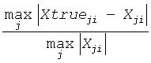

Improves the computed solution to a system of linear equations for symmetric or Hermitian positive-definite matrices by performing extra-precise iterative refinement and provides error bounds and backward error estimates for the solution.
Syntax
call sla_porfsx_extended( prec_type, uplo, n, nrhs, a, lda, af, ldaf, colequ, c, b, ldb, y, ldy, berr_out, n_norms, err_bnds_norm, err_bnds_comp, res, ayb, dy, y_tail, rcond, ithresh, rthresh, dz_ub, ignore_cwise, info )
call dla_porfsx_extended( prec_type, uplo, n, nrhs, a, lda, af, ldaf, colequ, c, b, ldb, y, ldy, berr_out, n_norms, err_bnds_norm, err_bnds_comp, res, ayb, dy, y_tail, rcond, ithresh, rthresh, dz_ub, ignore_cwise, info )
call cla_porfsx_extended( prec_type, uplo, n, nrhs, a, lda, af, ldaf, colequ, c, b, ldb, y, ldy, berr_out, n_norms, err_bnds_norm, err_bnds_comp, res, ayb, dy, y_tail, rcond, ithresh, rthresh, dz_ub, ignore_cwise, info )
call zla_porfsx_extended( prec_type, uplo, n, nrhs, a, lda, af, ldaf, colequ, c, b, ldb, y, ldy, berr_out, n_norms, err_bnds_norm, err_bnds_comp, res, ayb, dy, y_tail, rcond, ithresh, rthresh, dz_ub, ignore_cwise, info )
Include Files
- mkl.fi
Description
The ?la_porfsx_extended subroutine improves the computed solution to a system of linear equations by performing extra-precise iterative refinement and provides error bounds and backward error estimates for the solution. The ?herfsx routine calls ?la_porfsx_extended to perform iterative refinement.
In addition to normwise error bound, the code provides maximum componentwise error bound, if possible. See comments for err_bnds_norm and err_bnds_comp for details of the error bounds.
Use ?la_porfsx_extended to set only the second fields of err_bnds_norm and err_bnds_comp.
Input Parameters
- prec_type
INTEGER.
Specifies the intermediate precision to be used in refinement. The value is defined by ilaprec(p), where p is a CHARACTER and:
If p = 'S': Single.
If p = 'D': Double.
If p = 'I': Indigenous.
If p = 'X', 'E': Extra.
- uplo
CHARACTER*1. Must be 'U' or 'L'.
Specifies the triangle of A to store:
If uplo = 'U', the upper triangle of A is stored,
If uplo = 'L', the lower triangle of A is stored.
- n
INTEGER. The number of linear equations; the order of the matrix A; n≥ 0.
- nrhs
INTEGER. The number of right-hand sides; the number of columns of the matrix B.
- a, af, b, y
REAL for sla_porfsx_extended
DOUBLE PRECISION for dla_porfsx_extended
COMPLEX for cla_porfsx_extended
DOUBLE COMPLEX for zla_porfsx_extended.
Arrays: a(lda,*), af(ldaf,*), b(ldb,*), y(ldy,*).
The array a contains the original n-by-n matrix A. The second dimension of a must be at least max(1,n).
The array af contains the triangular factor L or U from the Cholesky factorization as computed by ?potrf:
A = UT*U or A = L*LT for real flavors,
A = UH*U or A = L*LH for complex flavors.
The second dimension of af must be at least max(1,n).
The array b contains the right-hand-side of the matrix B. The second dimension of b must be at least max(1,nrhs).
The array y on entry contains the solution matrix X as computed by ?potrs. The second dimension of y must be at least max(1,nrhs).
- lda
INTEGER. The leading dimension of the array a; lda≥ max(1,n).
- ldaf
INTEGER. The leading dimension of the array af; ldaf≥ max(1,n).
- colequ
LOGICAL. If colequ = .TRUE., column equilibration was done to A before calling this routine. This is needed to compute the solution and error bounds correctly.
- c
REAL for sla_porfsx_extended and cla_porfsx_extended
DOUBLE PRECISION for dla_porfsx_extended and zla_porfsx_extended.
c contains the column scale factors for A. If colequ = .FALSE., c is not used.
If c is input, each element of c should be a power of the radix to ensure a reliable solution and error estimates. Scaling by power of the radix does not cause rounding errors unless the result underflows or overflows. Rounding errors during scaling lead to refining with a matrix that is not equivalent to the input matrix, producing error estimates that may not be reliable.
- ldb
INTEGER. The leading dimension of the array b; ldb≥ max(1, n).
- ldy
INTEGER. The leading dimension of the array y; ldy≥ max(1, n).
- n_norms
INTEGER. Determines which error bounds to return. See err_bnds_norm and err_bnds_comp descriptions in Output Arguments section below.
If n_norms≥ 1, returns normwise error bounds.
If n_norms≥ 2, returns componentwise error bounds.
- err_bnds_norm
REAL for sla_porfsx_extended and cla_porfsx_extended
DOUBLE PRECISION for dla_porfsx_extended and zla_porfsx_extended.
Array, DIMENSION(nrhs,n_err_bnds). For each right-hand side, contains information about various error bounds and condition numbers corresponding to the normwise relative error.
Normwise relative error in the i-th solution vector is defined as follows:

The array is indexed by the type of error information as described below. There are currently up to three pieces of information returned.
The first index in err_bnds_norm(i,:) corresponds to the i-th right-hand side.
The second index in err_bnds_norm(:,err) contains the following three fields:
err=1
"Trust/don't trust" boolean. Trust the answer if the reciprocal condition number is less than the threshold sqrt(n)*slamch(ε) for sla_porfsx_extended/cla_porfsx_extended and sqrt(n)*dlamch(ε) for dla_porfsx_extended/zla_porfsx_extended.
err=2
"Guaranteed" error bound. The estimated forward error, almost certainly within a factor of 10 of the true error so long as the next entry is greater than the threshold sqrt(n)*slamch(ε) for sla_porfsx_extended/cla_porfsx_extended and sqrt(n)*dlamch(ε) for dla_porfsx_extended/zla_porfsx_extended. This error bound should only be trusted if the previous boolean is true.
err=3
Reciprocal condition number. Estimated normwise reciprocal condition number. Compared with the threshold sqrt(n)*slamch(ε) for sla_porfsx_extended/cla_porfsx_extended and sqrt(n)*dlamch(ε) for dla_porfsx_extended/zla_porfsx_extended to determine if the error estimate is "guaranteed". These reciprocal condition numbers are 1/(norm(1/z,inf)*norm(z,inf)) for some appropriately scaled matrix Z.
Let z=s*a, where s scales each row by a power of the radix so all absolute row sums of z are approximately 1.
Use this subroutine to set only the second field above.
- err_bnds_comp
REAL for sla_porfsx_extended and cla_porfsx_extended
DOUBLE PRECISION for dla_porfsx_extended and zla_porfsx_extended.
Array, DIMENSION(nrhs,n_err_bnds). For each right-hand side, contains information about various error bounds and condition numbers corresponding to the componentwise relative error, which is defined as follows:
Componentwise relative error in the i-th solution vector:

The array is indexed by the right-hand side i, on which the componentwise relative error depends, and by the type of error information as described below. There are currently up to three pieces of information returned for each right-hand side. If componentwise accuracy is nit requested (params(3) = 0.0), then err_bnds_comp is not accessed. If n_err_bnds < 3, then at most the first (:,n_err_bnds) entries are returned.
The first index in err_bnds_comp(i,:) corresponds to the i-th right-hand side.
The second index in err_bnds_comp(:,err) contains the follwoing three fields:
err=1
"Trust/don't trust" boolean. Trust the answer if the reciprocal condition number is less than the threshold sqrt(n)*slamch(ε) for sla_porfsx_extended/cla_porfsx_extended and sqrt(n)*dlamch(ε) for dla_porfsx_extended/zla_porfsx_extended.
err=2
"Guaranteed" error bpound. The estimated forward error, almost certainly within a factor of 10 of the true error so long as the next entry is greater than the threshold sqrt(n)*slamch(ε) for sla_porfsx_extended/cla_porfsx_extended and sqrt(n)*dlamch(ε) for dla_porfsx_extended/zla_porfsx_extended. This error bound should only be trusted if the previous boolean is true.
err=3
Reciprocal condition number. Estimated componentwise reciprocal condition number. Compared with the threshold sqrt(n)*slamch(ε) for sla_porfsx_extended/cla_porfsx_extended and sqrt(n)*dlamch(ε) for dla_porfsx_extended/zla_porfsx_extended to determine if the error estimate is "guaranteed". These reciprocal condition numbers are 1/(norm(1/z,inf)*norm(z,inf)) for some appropriately scaled matrix Z.
Let z=s*(a*diag(x)), where x is the solution for the current right-hand side and s scales each row of a*diag(x) by a power of the radix so all absolute row sums of z are approximately 1.
Use this subroutine to set only the second field above.
- res, dy, y_tail
REAL for sla_porfsx_extended
DOUBLE PRECISION for dla_porfsx_extended
COMPLEX for cla_porfsx_extended
DOUBLE COMPLEX for zla_porfsx_extended.
Workspace arrays of DIMENSIONn.
res holds the intermediate residual.
dy holds the intermediate solution.
y_tail holds the trailing bits of the intermediate solution.
- ayb
REAL for sla_porfsx_extended and cla_porfsx_extended
DOUBLE PRECISION for dla_porfsx_extended and zla_porfsx_extended.
Workspace array, DIMENSIONn.
- rcond
REAL for sla_porfsx_extended and cla_porfsx_extended
DOUBLE PRECISION for dla_porfsx_extended and zla_porfsx_extended.
Reciprocal scaled condition number. An estimate of the reciprocal Skeel condition number of the matrix A after equilibration (if done). If rcond is less than the machine precision, in particular, if rcond = 0, the matrix is singular to working precision. Note that the error may still be small even if this number is very small and the matrix appears ill-conditioned.
- ithresh
INTEGER. The maximum number of residual computations allowed for refinement. The default is 10. For 'aggressive', set to 100 to permit convergence using approximate factorizations or factorizations other than LU. If the factorization uses a technique other than Gaussian elimination, the guarantees in err_bnds_norm and err_bnds_comp may no longer be trustworthy.
- rthresh
REAL for sla_porfsx_extended and cla_porfsx_extended
DOUBLE PRECISION for dla_porfsx_extended and zla_porfsx_extended.
Determines when to stop refinement if the error estimate stops decreasing. Refinement stops when the next solution no longer satisfies
norm(dx_{i+1}) < rthresh * norm(dx_i)
where norm(z) is the infinity norm of Z.
rthresh satisfies
0 < rthresh≤ 1.
The default value is 0.5. For 'aggressive' set to 0.9 to permit convergence on extremely ill-conditioned matrices.
- dz_ub
REAL for sla_porfsx_extended and cla_porfsx_extended
DOUBLE PRECISION for dla_porfsx_extended and zla_porfsx_extended.
Determines when to start considering componentwise convergence. Componentwise dz_ub convergence is only considered after each component of the solution y is stable, that is, the relative change in each component is less than dz_ub. The default value is 0.25, requiring the first bit to be stable.
- ignore_cwise
LOGICAL
If .TRUE., the function ignores componentwise convergence. Default value is .FALSE.
Output Parameters
- y
REAL for sla_porfsx_extended
DOUBLE PRECISION for dla_porfsx_extended
COMPLEX for cla_porfsx_extended
DOUBLE COMPLEX for zla_porfsx_extended.
The improved solution matrix Y.
- berr_out
REAL for sla_porfsx_extended and cla_porfsx_extended
DOUBLE PRECISION for dla_porfsx_extended and zla_porfsx_extended.
Array, DIMENSIONnrhs. berr_out(j) contains the componentwise relative backward error for right-hand-side j from the formula
max(i) ( abs(res(i)) / ( abs(op(A))*abs(y) + abs(B) )(i) )
where abs(z) is the componentwise absolute value of the matrix or vector Z. This is computed by ?la_lin_berr.
- err_bnds_norm, err_bnds_comp
Values of the corresponding input parameters improved after iterative refinement and stored in the second column of the array ( 1:nrhs, 2 ). The other elements are kept unchanged.
- info
INTEGER. If info = 0, the execution is successful. The solution to every right-hand side is guaranteed.
If info = -i, the i-th parameter had an illegal value.